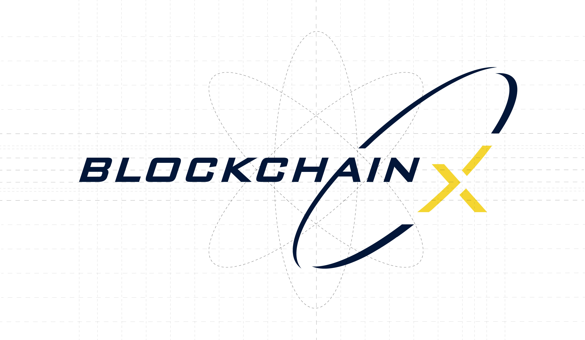

BlockChainX AB is a pioneer in BlockChain technology in Sweden. They are the owning company of EmployChain, an app that revolutionizes the hiring process using blockchain.
Using pen and paper, I draft as many concepts as possible without spending too much time on details. It is about generating ideas as effectively as possible using a few inspirations moodboards opened in front of me on my computer.
Sketches are brought into Illustrator where I design them into nicer concepts. Again this part is not about quality but speed, so logos are made in black and white so we can judge them on the same level.
BlockChainX is a pioneer with an aim to innovate how hiring is done on a global scale as well as popularizing blockchain technology. One of the most remarkable feature of the logo is the swoosh surrounding the X, illustrating the world towards X marks the spot, a common goal.
Primary colors consists of a complementary color strategy that also depicts Swedish flag colors. A dark blue is a cool and confident color that reminds of a corporate environment, while yellow conveys a bright feeling of optimism towards the future.